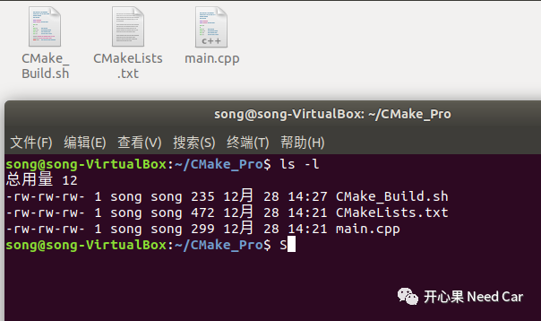
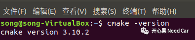
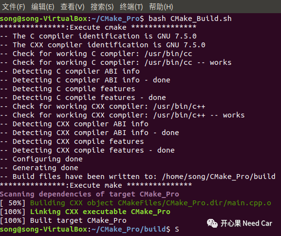
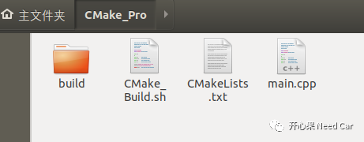
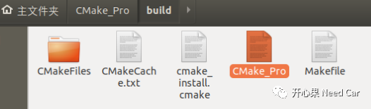
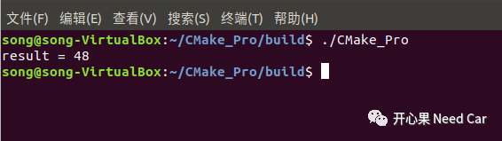

搞嵌入式开发？是时候学学CMake了，大家在github或者gitee上下载开源项目时，有没有发现很多开源项目在使用CMake。如果“嗅觉”灵敏，你应该意识到这是技术发展的趋势，为什么大神们在不约而同的使用CMake，一定有“妖”。来，咱们也试试手。
提示：本文在linux中操作，编译C++工程。C工程一样操作，将源文件和头文件编写成C的即可。
为什么有CMake
在嵌入式开发中，尤其做Autosar BSW的开发人员知道，项目如果使用的平台是一家还好（比如都使用英飞凌的芯片，TC233/TC297/TC387...），但是做供应商有时由不得你，可能你下一个项目就是瑞萨的RH850。不同的平台，编译器、调试器可能都得换，作为开发人员，你说心累不心累？别慌了，CMake可以治愈我们脆弱的玻璃心。CMake不仅可以跨平台，而且还免费，生成可移植的makefile，这样构建工程项目能不爽？

入门示例
假设有main.cpp文件需要编译，首先需要编写CMakeLists.txt文件，CMake_Build.sh是一个shell脚本文件（windows下可以写*.bat脚本文件），自动执行编译过程指令（等会儿提一下）。
文件结构如下所示：

01
CMakeLists.txt
cmake_minimum_required(VERSION 3.10.2)project(CMake_Pro)set(CMAKE_CXX_STANDARD 11)set(CMAKE_CXX_STANDARD_REQUIRED True)add_executable(CMake_Pro main.cpp)

02
main.cpp
typedef int(*calOpt)(int, int);int add(int x,int y){return (x + y);}int main(){int result;calOpt optFunc;optFunc = add;result = optFunc(0x10, 0x20);std::cout << "result = " << result << std::endl;return 0;}
03
CMake_Build.sh
dir="./build/"if [ ! -d $dir ]; thenmkdir $dirfichmod -R 777 $dircd $direcho "***************:Execute cmake ***************"cmake ..echo "***************:Execute make ***************"makeexec /bin/bash
04
执行编译
bash CMake_Build.sh


05
运行进程
./CMake_Pro
往期精彩推荐：

Vector代码这样过滤CanID Range，你Get到没？